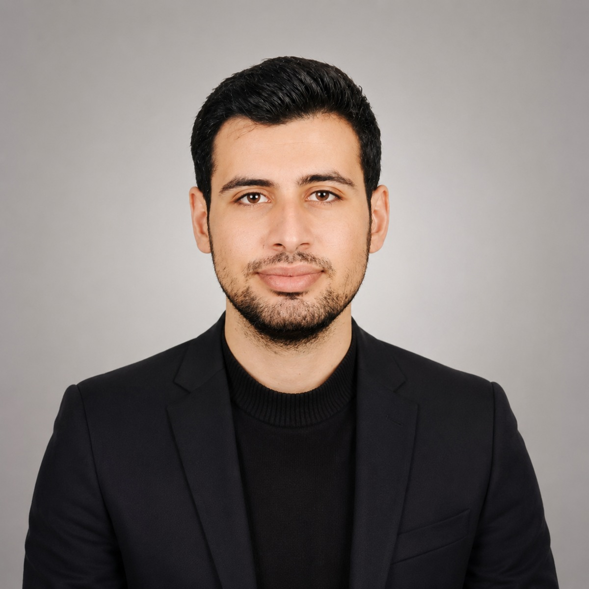

BYAPI / BİSE MİMARLIK
Mimar / Şantiye Şefi
Şantiye şefliği ve uygulama projesi çizimi. Depo sorumluluğu, malzeme tedariği, stok listelerinin hazırlanması ve güncel tutulması. Konut projeleri için teknik çizim ve plan sunumları.

Konya doğumlu bir mimarım. Mimarlık ofislerinde proje çizimi, 3B modelleme, görselleştirme ve BIM; cephe sektöründe tasarım, imalat ve saha koordinasyonu deneyimi edindim. Konya'nın önde gelen sanayi sitelerinde alüminyum cephe tasarımları ve şantiye şefliği üstlendim. Bugün HY Archworks çatısı altında, farklı ölçeklerdeki mimari projeler için görselleştirme ve animasyona odaklanıyorum.
Doğum
1 Temmuz 1998 · Konya
Yaş
28 (Eylül 2026)
Ehliyet
Var
Medeni durum
Evli
Askerlik
Yapıldı
Diller
İngilizce B2 · Almanca A1
arch.hakanyarali@gmail.com
+90 538 518 9176
Instagram: hakan_yarali_archworks
LinkedIn: arch-hakan-yarali
2017–2021
Necmettin Erbakan Üniversitesi
Güzel Sanatlar ve Mimarlık Fakültesi · Mimarlık Lisans
2016
Mehmet Münevver Kurban Anadolu Lisesi
AutoCAD · Revit · SketchUp · 3ds Max · Unreal Engine · Lumion · Twinmotion · Photoshop · After Effects · Premiere Pro · LogiKAL
3B modelleme ve animasyon · Yapay zeka ile görselleştirme · BIM sistemleri
Creathon 2024 — Yeni Nesil Kültürel Mekânlar için İçerik Geliştirme Yarışması İkinciliği
Mimar / Şantiye Şefi
Şantiye şefliği ve uygulama projesi çizimi. Depo sorumluluğu, malzeme tedariği, stok listelerinin hazırlanması ve güncel tutulması. Konut projeleri için teknik çizim ve plan sunumları.
Fabrika Teknik Birim / Şantiye Şefi / Mimar
Çelik, kompozit ve seramik gibi malzemelerle cephe tasarımı, projelendirme ve gerçekçi görselleştirme. Altınsan, Akasya ve Kolat Sanayi Sitelerinde imalat ve montaj takibi; malzeme tedariği, cam ve alüminyum siparişleri, teslim alma ve raporlama. Metraj, fiyat teklifi ve proje sunumu.
Mimari Ofis / Mimar
İhtiyaç programına göre taslak proje tasarımı, Photoshop ile proje sunumu ve uygulama projesi hazırlama.
Fabrika Teknik Birim / Şantiye Şefi / Mimar
Üretime uygun alüminyum imalat çizimleri; cam siparişlerinin hazırlanması ve takibi. Doğrama, giydirme cephe ve kompozit metrajları, teklif hazırlama ve profesyonel sistem görselleştirmeleri.
Mimari Ofis / Mimar
Uygulama projeleri; metrekare cetveli, TAKS, KAKS ve otopark hesapları. 3B modelleme ve proje sunum toplantılarına katılım.
Mimari Ofis / Mimar
Mimari proje evrak işleri, uygulama projesi çizimi, 3B modelleme ve görselleştirme.
Ofis Stajı
Güncel yönetmeliklere uygun tasarım; proje kontrollerinde mevzuata aykırı noktaların tespiti. Statik, mekanik, elektrik ve mimari projelerin belediye süreçlerinin öğrenilmesi.
Şantiye Stajı
Yapı denetim süreçlerinin incelenmesi, inşaat aşamalarının görevlilerle birlikte kontrolü ve yapı denetim sisteminin öğrenilmesi.